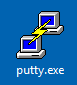
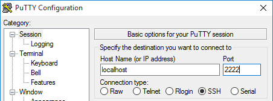

Install AGL Yocto image for Porter board using Docker container
Overview
This section gives details on a procedure which allows system developers and integrators to set up a the build environment image on their local host.
The prepared environment is deployed and available thanks to lightweight virtualization containers using Docker technology (See https://www.docker.com/). The pre-built image for AGL development activities is currently designed to be accessed using SSH Protocol.
Download the docker image
At the time of writing, we distribute the image as a compressed archive which can be downloaded faster as its footprint is around 226 MB. You can then import it into Docker with the following command:
curl https://download.automotivelinux.org/AGL/snapshots/sdk/docker/docker_agl_worker-3.0.tar.xz | docker load
You can check that the new Docker image is available by running the
docker images command :
$ docker images
REPOSITORY TAG IMAGE ID CREATED SIZE
docker.automotivelinux.org/agl/worker 3.0 18a6db4db383 2 months ago 925 MB
Note: if you want to rebuild from scratch this docker image, you should
use scripts located into docker-worker-generator repository.
git clone https://gerrit.automotivelinux.org/gerrit/AGL/docker-worker-generator
Then, please refer to README.md file for more details.
Start the container
Once the image is available on your local host, you can start the container and the SSH service. We’ll also need a local directory on the host to store bitbake mirrors (download cache and sstate cache): this mirror helps to speed up builds.
First, create a local directory and make it available to everyone:
MIRRORDIR=<your path here, ~/mirror for example>;
mkdir -p $MIRRORDIR
chmod 777 $MIRRORDIR
Then we can start the docker image using the following command:
docker run \
--publish=2222:22 \
--publish=8000:8000 \
--publish=69:69/udp --publish=10809:10809 \
--detach=true --privileged \
--hostname=bsp-devkit --name=bsp-devkit \
-v /sys/fs/cgroup:/sys/fs/cgroup:ro \
-v $MIRRORDIR:/home/devel/mirror \
docker.automotivelinux.org/agl/worker:3.0
Then, you can check that the image is running with the following command:
$ docker ps
CONTAINER ID IMAGE COMMAND CREATED STATUS PORTS NAMES
3126423788bd docker.automotivelinux.org/agl/worker:3.0 "/usr/bin/wait_for..." 2 seconds ago Up 2 seconds 0.0.0.0:2222->22/tcp, 0.0.0.0:69->69/udp, 0.0.0.0:8000->8000/tcp, 0.0.0.0:10809->10809/tcp bsp-devkit
The container is now ready to be used. A dedicated user has been declared:
- login: devel
- password: devel
The following port redirections allow access to some services in the container:
- port 2222: SSH access using
ssh -p 2222 devel@localhost - port 8000: access to Toaster WebUI through http://localhost:8000/ when started (see Yocto documentation)
- ports 69 (TFTP) and 10809 (NBD): used for network boot (future enhancement)
For easier operations, you can copy your ssh identity inside the container:
ssh-copy-id -p 2222 <devel@localhost> # password is 'devel'
Connect to Yocto container through SSH
The DevKit container provides a pre-built set of tools which can be accessed through a terminal by using Secure Shell protocol (SSH).
Linux, Mac OS X ©
On Linux-based systems, you may need to install an SSH client.
To launch the session, you can enter the following under Linux or Mac OS X:
ssh -p 2222 devel@localhost
The password is “devel”. You should obtain the following prompt after success:
devel@localhost's password: **devel**
The programs included with the Debian GNU/Linux system are free
software; the exact distribution terms for each program are described in the
individual files in /usr/share/doc/*/copyright.
Debian GNU/Linux comes with ABSOLUTELY NO WARRANTY, to the extent
permitted by applicable law.
[11:28:27] devel@bsp-devkit:~$
Windows ©
You will need PuTTY, downloaded during the setup section. Run it using its icon:
{style width:60px;}
We can then connect to “localhost” on port “2222”.
{style width:60%;}
Credentials are the same as for Linux: user is “devel” with password “devel”.
Set up a persistent workspace
AGL Docker image brings a set of tools and here we describe a way to prepare a “shared directory” on your local host accessible from the container. The aim of this shared directory is to allow your ongoing developments to stay independent from the container upgrades.
Please note this whole procedure is not mandatory, but highly recommended as it will save disk space later when you will deploy the SD card image on your target.
From Linux host using a shared directory
Current docker implementation has a limitation about UID:GID mapping between hosts and containers. In the long run, the planned mechanism is to use the “user namespace” feature. But for now, we propose another approach unfortunately less flexible.
We can use a directory on the local host with a dedicated Unix group using a common GID between the host and the container. This GID has been fixed to “1664” (see) and can be created on your linux host using the following commands:
sudo groupadd --gid 1664 agl-sdk
sudo usermod -aG agl-sdk *<your-login>*
If this GID is already used on your local host, you will have to use it for this sharing purpose as well. In case this is not possible, another option to exchange workspace data can be the use of a network service (like SSH, FTP) of the container and from your local host.
Once the GID is ready to use, we can create a shared directory (not as ‘root’, but as your normal user):
cd
mkdir $HOME/agl-workspace
sudo chgrp agl-sdk $HOME/agl-workspace
chmod ug+w $HOME/agl-workspace
And run the Docker image with the shared directory (new volume):
$ docker run \
--publish=2222:22 \
--publish=8000:8000 \
--publish=69:69/udp --publish=10809:10809 \
--detach=true --privileged \
--hostname=bsp-devkit --name=bsp-devkit \
-v /sys/fs/cgroup:/sys/fs/cgroup:ro \
-v $MIRRORDIR:/home/devel/mirror \
-v $HOME/agl-workspace:/xdt/workspace \ <--- shared directory
docker.automotivelinux.org/agl/worker:3.0
From Windows © host using a shared directory
We will create a shared directory for our user:
mkdir /c/Users/$USERNAME/agl-workspace
And run the Docker image with the shared directory (new volume):
$ docker run \
--publish=2222:22 --publish=8000:8000 \
--publish=69:69/udp --publish=10809:10809 \
--detach=true --privileged --hostname=bsp-devkit \
--name=bsp-devkit \
-v /sys/fs/cgroup:/sys/fs/cgroup:ro \
-v $MIRRORDIR:/home/devel/mirror \
-v /c/Users/$USERNAME/agl-workspace:/xdt/workspace \ <--- shared directory
docker.automotivelinux.org/agl/worker:3.0
From the container using a remote directory (SSHFS)
It’s also possible to mount a remote directory inside the container if the source host is running a ssh server. In that case, we will use a SSH connection from the host to the container as a control link, and another SSH connection from the container to the host as a data link.
To do so, you can start the container normally as described in Start container chapter, start an SSH session and run the following commands to install the package “sshfs” inside the container:
sudo apt-get update
sudo apt-get install -y sshfs
NB: sudo will ask for the password of the user “devel”, which is “devel”.
Now, if we want to mount the remote dir ‘/data/workspace’ with user ‘alice’ on host ‘computer42’, then we would run:
$ sshfs alice@computer42:/data/workspace -o nonempty $XDT_WORKSPACE
...
Password: <enter alice password on computer42>
NB: the directory on the remote machine must be owned by the remote user
Verify that the mount is effective:
$ df /xdt/workspace
Filesystem 1K-blocks Used Available Use% Mounted on
alice@computer42:/data/workspace 103081248 7138276 95612016 7% /xdt/workspace
From now, the files created inside the container in /xdt/workspace are stored ‘outside’, in the shared directory with proper uid/gid.
To unmount the shared directory, you can run:
$sudo umount $XDT_WORKSPACE